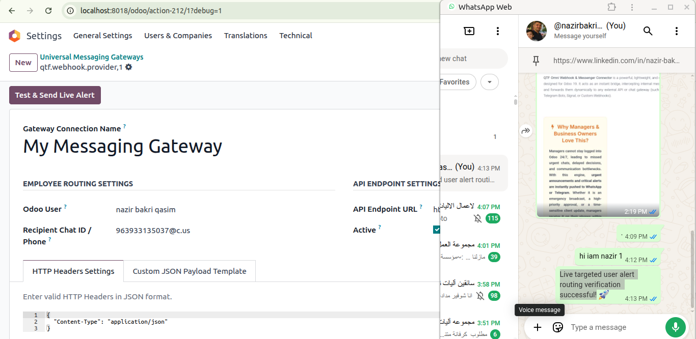
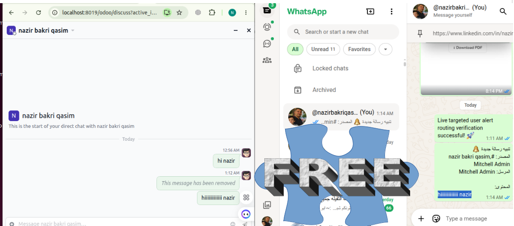
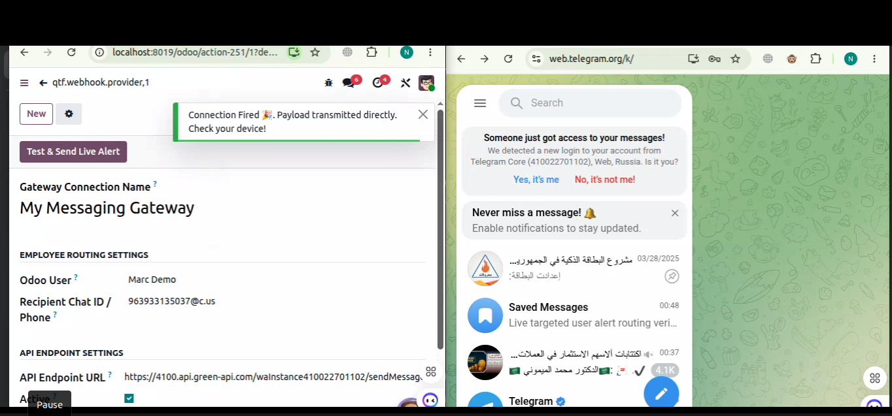
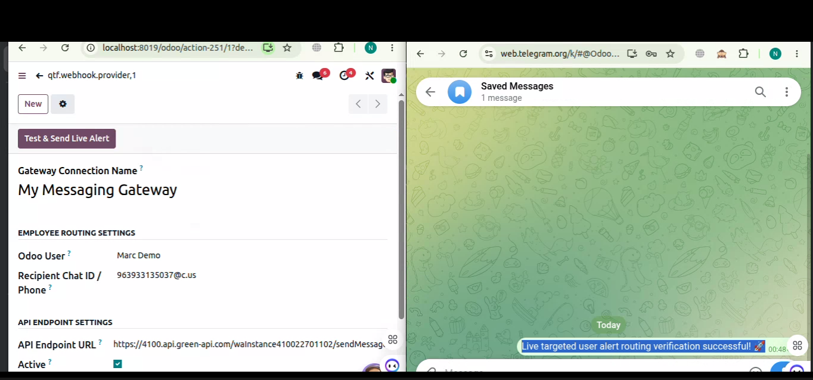
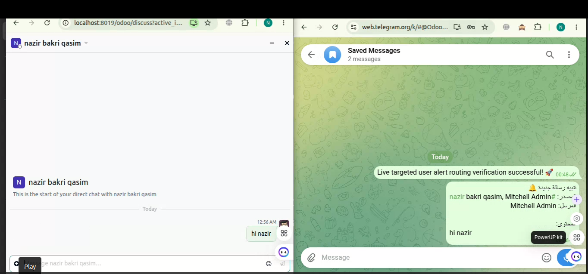

QTF Omni Webhook & Messenger Connector is a powerful, lightweight, and completely free open-source module designed for Odoo 19. It acts as an instant bridge, intercepting internal messages from Odoo Discuss channels and forwards them dynamically to any external API or chat gateway (such as WhatsApp via Green API/Twilio, Telegram Bots, Signal, or Custom Webhooks).
Managers cannot stay logged into Odoo 24/7, leading to missed urgent chats, delayed decisions, and communication bottlenecks. With this engine, urgent announcements and critical alerts are instantly pushed to WhatsApp or Telegram. Whether it is an emergency broadcast, a high-priority approval, or a time-sensitive client update, managers receive it on their phones within milliseconds, ensuring seamless business continuity even when offline.
Works natively with any HTTP POST API gateway worldwide.
Bypasses internal Odoo sandboxing limits securely via native server requests.
Fully customizable JSON template fields using the {{message}} placeholder.
Automatically strips complex HTML/P/BR tags from chat strings before dispatching.





Your support keeps this project alive and open-source! If this module successfully saved your development time or helped your business, please leave us a 5-star rating on the Odoo Apps Store. Your feedback means the world to us!